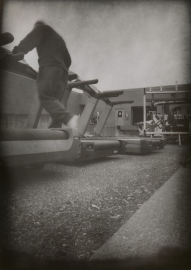
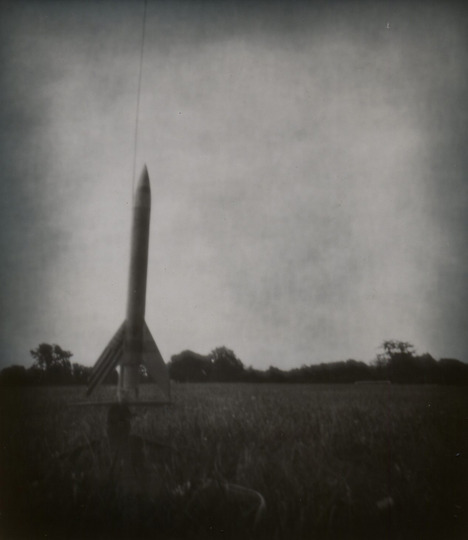
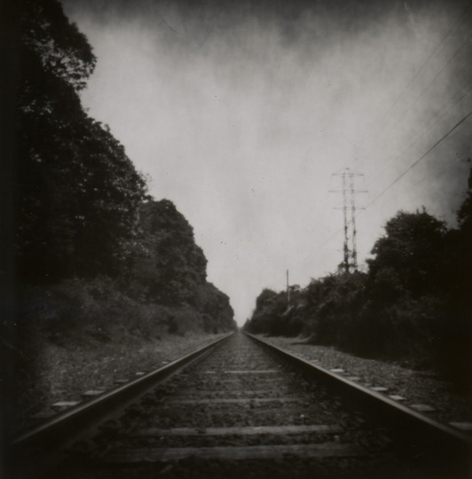

Pinhole Camera and Photographs
<Back to main page>In my photography class last year, we had a unit on pinhole photography as we learned the fundamental principles behind how cameras work. Inspired by this unit, I made my own pinhole camera out of plywood and set out taking a wide variety of images as I experimented with this primitive yet expressive form of photography.
Listed below are three of my favorite images that I've taken in my time practicing pinhole photography.


